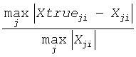
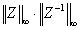

Uses extra precise iterative refinement to improve the solution to the system of linear equations with a symmetric indefinite coefficient matrix A and provides error bounds and backward error estimates.
Syntax
call ssyrfsx( uplo, equed, n, nrhs, a, lda, af, ldaf, ipiv, s, b, ldb, x, ldx, rcond, berr, n_err_bnds, err_bnds_norm, err_bnds_comp, nparams, params, work, iwork, info )
call dsyrfsx( uplo, equed, n, nrhs, a, lda, af, ldaf, ipiv, s, b, ldb, x, ldx, rcond, berr, n_err_bnds, err_bnds_norm, err_bnds_comp, nparams, params, work, iwork, info )
call csyrfsx( uplo, equed, n, nrhs, a, lda, af, ldaf, ipiv, s, b, ldb, x, ldx, rcond, berr, n_err_bnds, err_bnds_norm, err_bnds_comp, nparams, params, work, rwork, info )
call zsyrfsx( uplo, equed, n, nrhs, a, lda, af, ldaf, ipiv, s, b, ldb, x, ldx, rcond, berr, n_err_bnds, err_bnds_norm, err_bnds_comp, nparams, params, work, rwork, info )
Include Files
- mkl.fi, lapack.f90
Description
The routine improves the computed solution to a system of linear equations when the coefficient matrix is symmetric indefinite, and provides error bounds and backward error estimates for the solution. In addition to a normwise error bound, the code provides a maximum componentwise error bound, if possible. See comments for err_bnds_norm and err_bnds_comp for details of the error bounds.
The original system of linear equations may have been equilibrated before calling this routine, as described by the parameters equed and s below. In this case, the solution and error bounds returned are for the original unequilibrated system.
Input Parameters
- uplo
CHARACTER*1. Must be 'U' or 'L'.
Indicates whether the upper or lower triangular part of A is stored:
If uplo = 'U', the upper triangle of A is stored.
If uplo = 'L', the lower triangle of A is stored.
- equed
CHARACTER*1. Must be 'N' or 'Y'.
Specifies the form of equilibration that was done to A before calling this routine.
If equed = 'N', no equilibration was done.
If equed = 'Y', both row and column equilibration was done, that is, A has been replaced by diag(s)*A*diag(s). The right-hand side B has been changed accordingly.
- n
INTEGER. The number of linear equations; the order of the matrix A; n≥ 0.
- nrhs
INTEGER. The number of right-hand sides; the number of columns of the matrices B and X; nrhs≥ 0.
- a, af, b, work
REAL for ssyrfsx
DOUBLE PRECISION for dsyrfsx
COMPLEX for csyrfsx
DOUBLE COMPLEX for zsyrfsx.
Arrays: a(lda,*), af(ldaf,*), b(ldb,*), work(*).
The array a contains the symmetric/Hermitian matrix A as specified by uplo. If uplo = 'U', the leading n-by-n upper triangular part of a contains the upper triangular part of the matrix A and the strictly lower triangular part of a is not referenced. If uplo = 'L', the leading n-by-n lower triangular part of a contains the lower triangular part of the matrix A and the strictly upper triangular part of a is not referenced. The second dimension of a must be at least max(1,n).
The array af contains the triangular factor L or U from the Cholesky factorization A = UT*U or A = L*LT as computed by ssytrf for real flavors or dsytrf for complex flavors.
The array b contains the matrix B whose columns are the right-hand sides for the systems of equations. The second dimension of b must be at least max(1,nrhs).
work(*) is a workspace array. The dimension of work must be at least max(1,4*n) for real flavors, and at least max(1,2*n) for complex flavors.
- lda
INTEGER. The leading dimension of a; lda≥ max(1, n).
- ldaf
INTEGER. The leading dimension of af; ldaf≥ max(1, n).
- ipiv
INTEGER.
Array, size at least max(1, n). Contains details of the interchanges and the block structure of D as determined by ssytrf for real flavors or dsytrf for complex flavors.
- s
REAL for single precision flavors
DOUBLE PRECISION for double precision flavors.
Array, size (n). The array s contains the scale factors for A.
If equed = 'N', s is not accessed.
If equed = 'Y', each element of s must be positive.
Each element of s should be a power of the radix to ensure a reliable solution and error estimates. Scaling by powers of the radix does not cause rounding errors unless the result underflows or overflows. Rounding errors during scaling lead to refining with a matrix that is not equivalent to the input matrix, producing error estimates that may not be reliable.
- ldb
INTEGER. The leading dimension of the array b; ldb≥ max(1, n).
- x
REAL for ssyrfsx
DOUBLE PRECISION for dsyrfsx
COMPLEX for csyrfsx
DOUBLE COMPLEX for zsyrfsx.
Array, size ldx by *.
The solution matrix X as computed by ?sytrs
- ldx
INTEGER. The leading dimension of the output array x; ldx≥ max(1, n).
- n_err_bnds
INTEGER. Number of error bounds to return for each right hand side and each type (normwise or componentwise). See err_bnds_norm and err_bnds_comp descriptions in Output Arguments section below.
- nparams
INTEGER. Specifies the number of parameters set in params. If ≤ 0, the params array is never referenced and default values are used.
- params
REAL for single precision flavors
DOUBLE PRECISION for double precision flavors.
Array, size nparams. Specifies algorithm parameters. If an entry is less than 0.0, that entry will be filled with the default value used for that parameter. Only positions up to nparams are accessed; defaults are used for higher-numbered parameters. If defaults are acceptable, you can pass nparams = 0, which prevents the source code from accessing the params argument.
params(1) : Whether to perform iterative refinement or not. Default: 1.0 (for single precision flavors), 1.0D+0 (for double precision flavors).
=0.0
No refinement is performed and no error bounds are computed.
=1.0
Use the double-precision refinement algorithm, possibly with doubled-single computations if the compilation environment does not support double precision.
(Other values are reserved for future use.)
params(2) : Maximum number of residual computations allowed for refinement.
Default
10.0
Aggressive
Set to 100.0 to permit convergence using approximate factorizations or factorizations other than LU. If the factorization uses a technique other than Gaussian elimination, the guarantees in err_bnds_norm and err_bnds_comp may no longer be trustworthy.
params(3) : Flag determining if the code will attempt to find a solution with a small componentwise relative error in the double-precision algorithm. Positive is true, 0.0 is false. Default: 1.0 (attempt componentwise convergence).
- iwork
INTEGER. Workspace array, size at least max(1, n); used in real flavors only.
- rwork
REAL for single precision flavors
DOUBLE PRECISION for double precision flavors.
Workspace array, size at least max(1, 3*n); used in complex flavors only.
Output Parameters
- x
REAL for ssyrfsx
DOUBLE PRECISION for dsyrfsx
COMPLEX for csyrfsx
DOUBLE COMPLEX for zsyrfsx.
The improved solution matrix X.
- rcond
REAL for single precision flavors
DOUBLE PRECISION for double precision flavors.
Reciprocal scaled condition number. An estimate of the reciprocal Skeel condition number of the matrix A after equilibration (if done). If rcond is less than the machine precision, in particular, if rcond = 0, the matrix is singular to working precision. Note that the error may still be small even if this number is very small and the matrix appears ill-conditioned.
- berr
REAL for single precision flavors
DOUBLE PRECISION for double precision flavors.
Array, size at least max(1, nrhs). Contains the componentwise relative backward error for each solution vector x(j), that is, the smallest relative change in any element of A or B that makes x(j) an exact solution.
- err_bnds_norm
REAL for single precision flavors
DOUBLE PRECISION for double precision flavors.
Array of size nrhs by n_err_bnds. For each right-hand side, contains information about various error bounds and condition numbers corresponding to the normwise relative error, which is defined as follows:
Normwise relative error in the i-th solution vector

The array is indexed by the type of error information as described below. There are currently up to three pieces of information returned.
The first index in err_bnds_norm(i,:) corresponds to the i-th right-hand side.
The second index in err_bnds_norm(:,err) contains the follwoing three fields:
err=1
"Trust/don't trust" boolean. Trust the answer if the reciprocal condition number is less than the threshold sqrt(n)*slamch(ε) for single precision flavors and sqrt(n)*dlamch(ε) for double precision flavors.
err=2
"Guaranteed" error bound. The estimated forward error, almost certainly within a factor of 10 of the true error so long as the next entry is greater than the threshold sqrt(n)*slamch(ε) for single precision flavors and sqrt(n)*dlamch(ε) for double precision flavors. This error bound should only be trusted if the previous boolean is true.
err=3
Reciprocal condition number. Estimated normwise reciprocal condition number. Compared with the threshold sqrt(n)*slamch(ε) for single precision flavors and sqrt(n)*dlamch(ε) for double precision flavors to determine if the error estimate is "guaranteed". These reciprocal condition numbers for some appropriately scaled matrix Z are:

- err_bnds_comp
REAL for single precision flavors
DOUBLE PRECISION for double precision flavors.
Array of size nrhs by n_err_bnds. For each right-hand side, contains information about various error bounds and condition numbers corresponding to the componentwise relative error, which is defined as follows:
Componentwise relative error in the i-th solution vector:

The array is indexed by the right-hand side i, on which the componentwise relative error depends, and by the type of error information as described below. There are currently up to three pieces of information returned for each right-hand side. If componentwise accuracy is not requested (params(3) = 0.0), then err_bnds_comp is not accessed. If n_err_bnds < 3, then at most the first (:,n_err_bnds) entries are returned.
The first index in err_bnds_comp(i,:) corresponds to the i-th right-hand side.
The second index in err_bnds_comp(:,err) contains the following three fields:
err=1
"Trust/don't trust" boolean. Trust the answer if the reciprocal condition number is less than the threshold sqrt(n)*slamch(ε) for single precision flavors and sqrt(n)*dlamch(ε) for double precision flavors.
err=2
"Guaranteed" error bpound. The estimated forward error, almost certainly within a factor of 10 of the true error so long as the next entry is greater than the threshold sqrt(n)*slamch(ε) for single precision flavors and sqrt(n)*dlamch(ε) for double precision flavors. This error bound should only be trusted if the previous boolean is true.
err=3
Reciprocal condition number. Estimated componentwise reciprocal condition number. Compared with the threshold sqrt(n)*slamch(ε) for single precision flavors and sqrt(n)*dlamch(ε) for double precision flavors to determine if the error estimate is "guaranteed". These reciprocal condition numbers for some appropriately scaled matrix Z are:
Let z=s*(a*diag(x)), where x is the solution for the current right-hand side and s scales each row of a*diag(x) by a power of the radix so all absolute row sums of z are approximately 1.
- params
REAL for single precision flavors
DOUBLE PRECISION for double precision flavors.
Output parameter only if the input contains erroneous values, namely, in params(1), params(2), params(3). In such a case, the corresponding elements of params are filled with default values on output.
- info
INTEGER. If info = 0, the execution is successful. The solution to every right-hand side is guaranteed.
If info = -i, the i-th parameter had an illegal value.
If 0 < info≤n: Uinfo,info is exactly zero. The factorization has been completed, but the factor U is exactly singular, so the solution and error bounds could not be computed; rcond = 0 is returned.
If info = n+j: The solution corresponding to the j-th right-hand side is not guaranteed. The solutions corresponding to other right-hand sides k with k > j may not be guaranteed as well, but only the first such right-hand side is reported. If a small componentwise error is not requested params(3) = 0.0, then the j-th right-hand side is the first with a normwise error bound that is not guaranteed (the smallest j such that err_bnds_norm(j,1) = 0.0 or err_bnds_comp(j,1) = 0.0. See the definition of err_bnds_norm and err_bnds_comp for err = 1. To get information about all of the right-hand sides, check err_bnds_norm or err_bnds_comp.